Manual de uso do Cotador de Planos
← Voltar ao cotadorPasso a passo de cada tela, na ordem em que uma venda acontece: da cotação até a comissão. As imagens usam clientes fictícios; clique numa imagem para ampliar.
1. Primeiros passos
O Cotador monta cotações de planos de saúde, envia a proposta pelo WhatsApp e acompanha a venda até a comissão. Uma venda passa por quatro telas:
- Nova Cotação: você escolhe os planos e envia ao cliente a mensagem com a imagem ou o link da proposta.
- Aceites: o cliente aceita pelo link, e você pede e recebe os documentos dele.
- Contratos Vendidos: a venda vira contrato, com a data de ativação do plano.
- Financeiro > Comissões: o contrato recebe a regra da corretora, e o sistema calcula quanto e quando você recebe.
Entrar no sistema
- Abra o endereço do cotador e entre com o seu login e a sua senha.
- Cada login é de uso individual. Se o mesmo login entrar em outro aparelho, o acesso anterior é encerrado.
- Esqueceu a senha? Clique em Esqueci minha senha na tela de entrada. O link chega no e-mail cadastrado e só funciona uma vez.
Menu lateral
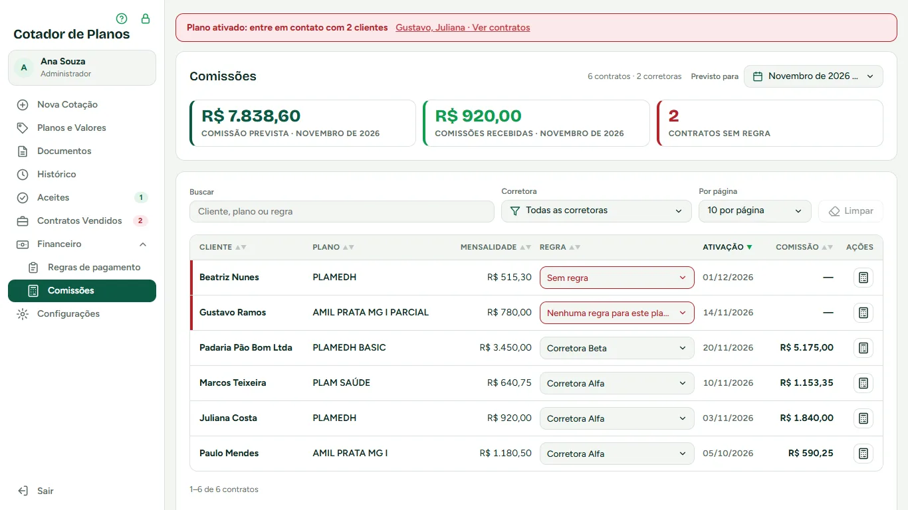
- Financeiro abre e fecha os itens Regras de pagamento e Comissões.
- O cadeado fixa o menu aberto ou o recolhe numa faixa de ícones, que abre ao passar o mouse. Recolher o menu dá mais espaço às grades em telas pequenas.
- O ícone ?, ao lado do cadeado, abre este manual.
- O seu nome e a sua foto ficam no topo; clicar neles abre Meus dados.
- Os números ao lado de Resgate, Aceites e Contratos Vendidos mostram o que espera por você: clientes na fila do resgate, aceites pendentes e clientes a contatar.
- A faixa vermelha no topo avisa os planos que ativaram e cujo cliente ainda não recebeu o contato. Clique nela para ir aos contratos.
Perfis e acesso
- Administrador vê todas as telas e ainda Usuários, Backup e Atualizar sistema.
- Usuário vê só as telas que o administrador liberou. Cada tela pode ser de edição, só visualização ou sem acesso.
- Cotações, resgate, aceites, contratos, corretoras e comissões são de cada login: cada um vê só os seus, inclusive o administrador. O Resgate tem acesso próprio, liberado na tela de usuários como as outras telas.
2. Nova Cotação
A cotação é montada numa tela só. Ela vai sozinha para o Histórico assim que tem nome, WhatsApp e ao menos um plano: não existe botão de salvar.
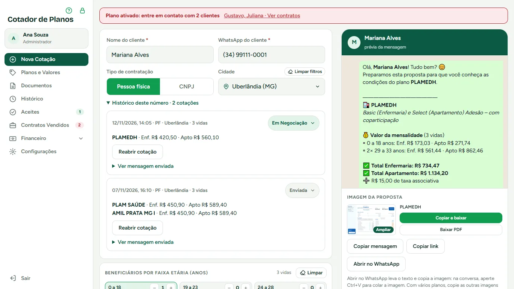
Passo a passo
- Cliente: preencha Nome do cliente e WhatsApp do cliente com DDD, como
(34) 99111-0001. Os dois são obrigatórios: as faixas etárias só liberam depois deles. - Tipo e cidade: escolha Pessoa física ou CNPJ e a Cidade. A lista mostra só os planos vendidos na cidade escolhida.
- Administradora e entidade (só pessoa física): escolha a administradora (Qualicorp, Affix…) e a entidade do titular (UNIPRO, ANAPROLIE…). Ficam só os planos que aceitam essa escolha. Ao escolher a entidade, a administradora dela é marcada sozinha, e a mensagem do WhatsApp passa a citar a administradora e a entidade.
- Beneficiários: em Beneficiários por faixa etária, use + e − para dizer quantas pessoas há em cada faixa.
- Planos: em Planos da proposta, marque os planos. A busca e o filtro de operadora ajudam a achar; planos com opções (total, parcial, coparticipação) abrem a escolha ao clicar na seta.
- Conferir: a prévia à direita mostra a mensagem como o cliente vai ver. Em Ajustar o texto antes de enviar dá para mudar o texto.
- Enviar: veja a tabela abaixo.
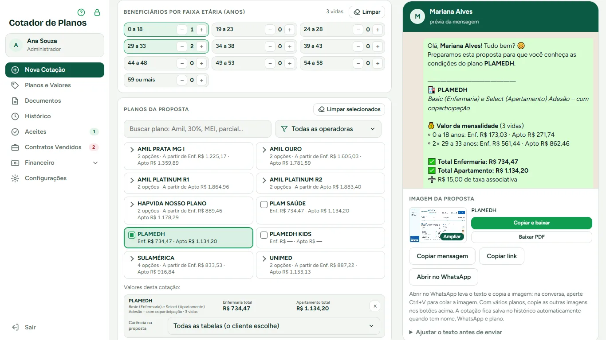
Formas de enviar
| Botão | O que faz | Quando usar |
|---|---|---|
| Abrir no WhatsApp | Abre a conversa do cliente com o texto pronto e copia a imagem da proposta. | No dia a dia. Na conversa, aperte Ctrl+V para colar a imagem. |
| Copiar e baixar | Copia e baixa a imagem de um plano. | Para mandar a imagem de cada plano quando há vários. |
| Baixar PDF | Baixa a proposta do plano em PDF. | Quando o cliente pede um arquivo, ou por e-mail. |
| Comparativo | Monta uma imagem com os planos lado a lado. | Quando o cliente quer comparar dois ou mais planos. |
| Copiar mensagem / Copiar link | Copia só o texto ou só o link da proposta. | Para colar em outro aplicativo. |
Outras dicas
- Ao digitar o WhatsApp de um cliente que já tem cotações, o nome aparece sozinho e as cotações anteriores dele aparecem abaixo dos campos, com o botão Reabrir cotação.
- Limpar zera as faixas; zerar as faixas também desmarca os planos.
- O item Nova Cotação do menu recomeça do zero.
3. Planos e Valores e Documentos
Essas duas telas guardam o que vai na proposta: os preços e as regras de cada plano e os documentos pedidos ao cliente. Quem não tem acesso de edição só consulta.
Planos e Valores
A lista mostra os planos por tipo (Pessoa física ou CNPJ). Clique num plano para ver as informações dele, ou em Editar para mudar.
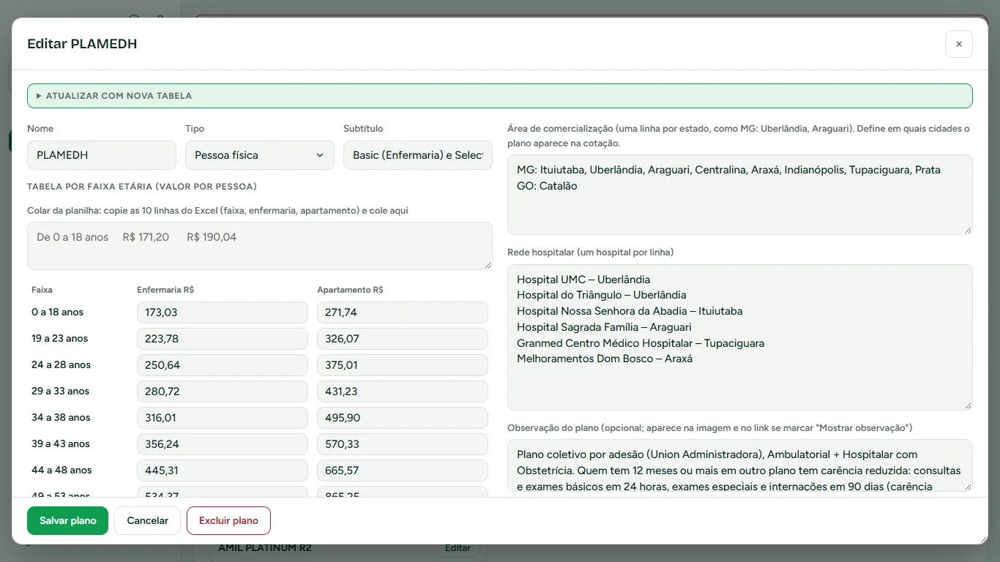
- Novo plano abre o editor vazio. Os campos principais são nome, subtítulo, tipo (PF ou CNPJ), taxa associativa, mínimo de vidas e ordem na lista.
- Preços: em Colar da planilha, copie do Excel as 10 linhas (faixa, enfermaria, apartamento) e cole. Os valores entram nas faixas.
- Administradora e entidades (pessoa física por adesão): a administradora do plano e as entidades que o titular pode usar, uma por linha, como
UNIPRO – Profissionais liberais. A cotação usa esses campos para filtrar os planos. - Área de comercialização: uma linha por estado. Ela define em que cidades o plano aparece na cotação.
- Proposta: coparticipação e carências (imagem ou tabela), rede hospitalar, benefícios, observação e as cores da operadora.
- Os valores salvos valem para todas as próximas cotações; as cotações já enviadas não mudam. Excluir plano fica no próprio editor.
MG: Uberlândia, Araguari, AraxáGO: CatalãoCom isso, o plano aparece para quem escolher uma dessas quatro cidades e some nas outras.
0 a 18 anos 173,03 271,74. São 10 linhas assim, uma por faixa, copiadas direto das colunas do Excel.Documentos
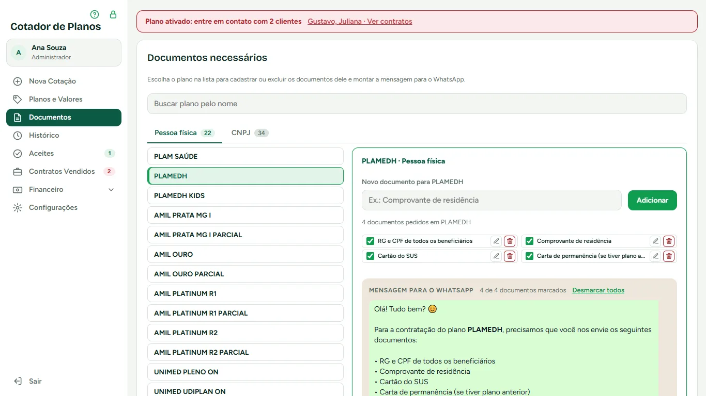
- Escolha o plano na lista.
- Em Novo documento, digite o nome, como Comprovante de residência, e clique em Adicionar. O lápis renomeia e a lixeira exclui.
- Desmarque os documentos que não quer pedir desta vez: eles saem só da mensagem, não do plano.
- Copiar mensagem copia a lista pronta para mandar ao cliente pelo WhatsApp.
Essa lista é a mesma que o cliente vê na página de envio de documentos, depois do aceite.
4. Histórico e Resgate
O Histórico mostra um cliente por linha, com a última cotação dele e a situação da negociação.
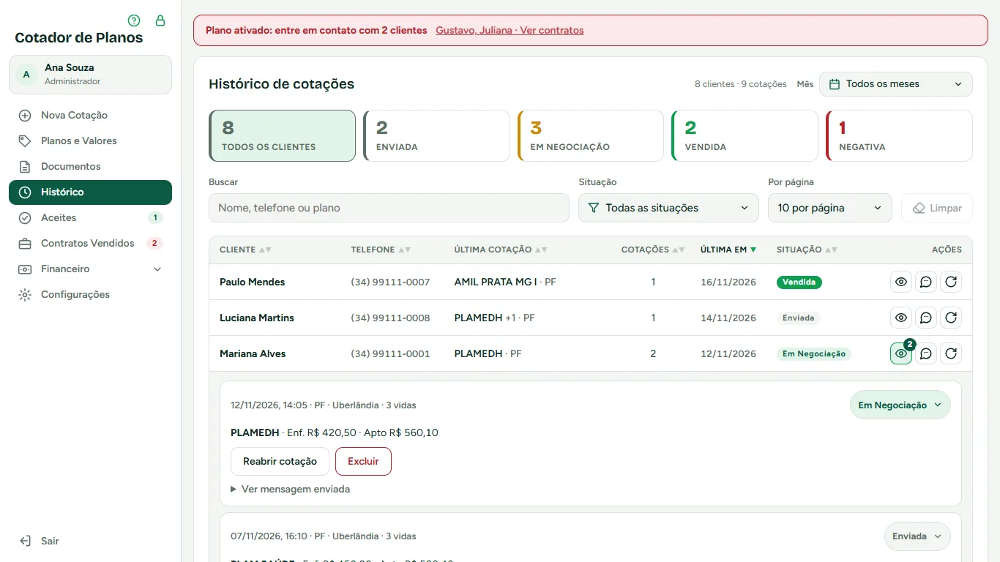
- Cards do topo: Enviada, Em Negociação, Vendida e Negativa. Clicar num card mostra só os clientes daquela situação.
- Mês: filtra pelo mês da última cotação de cada cliente.
- Dia: depois de escolher o mês, filtra por um dia dele. A lista mostra só os dias com cotação, com a quantidade de clientes. Ao trocar de mês, volta para todos os dias.
- Buscar: por nome, telefone ou plano.
- Ícones da linha: o olho abre uma janela com as cotações do cliente (o número mostra quantas são); o balão abre a conversa no WhatsApp; a seta circular reabre a última cotação em Nova Cotação; a maleta cadastra a venda em Contratos Vendidos (em destaque quando o cliente está como Vendida e ainda não tem contrato; marcada quando ele já está lá).
- Janela das cotações: em cada cotação dá para mudar a situação, ver a mensagem enviada, reabrir ou excluir.
- Vendida: ao escolher essa situação, abre a janela Cadastrar em Contratos Vendidos. Escolha o plano e a acomodação vendidos (o valor vem da cotação e pode ser ajustado), informe a data de ativação e clique em Cadastrar venda: a cotação fica como Vendida e o contrato entra em Contratos Vendidos. Cancelar volta a situação de antes. Se o cliente já está em Contratos Vendidos, só a situação muda. Tirar a cotação de Vendida depois tira de Contratos Vendidos o contrato que ela gerou, com os documentos dele.
Resgate
O cliente que está sem cotar há mais dias que o escolhido por você (o padrão é 90 dias), não fechou e não está como Negativa vai sozinho para a tela Resgate. Ele recebe, uma vez só, uma mensagem no seu WhatsApp perguntando se ainda tem interesse, sem você precisar clicar em nada.
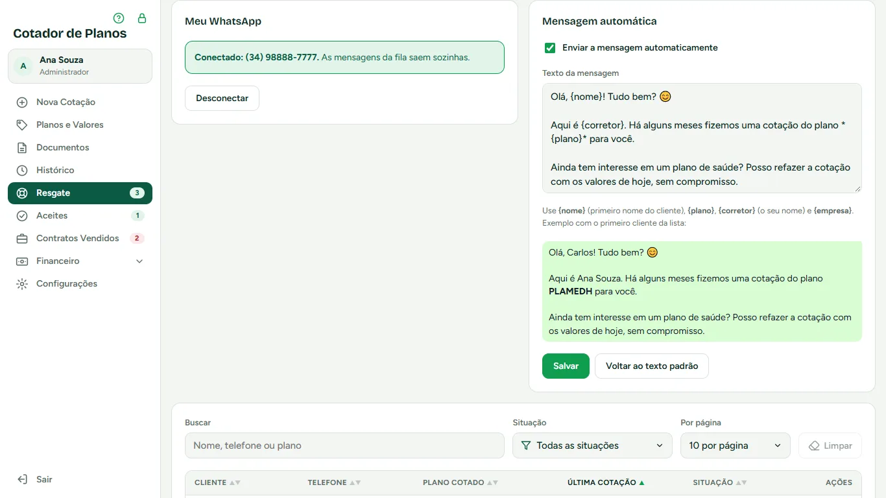
- Abra Resgate e clique em Conectar meu WhatsApp.
- No celular, abra o WhatsApp, toque em Aparelhos conectados › Conectar um aparelho e leia o QR Code da tela.
- Confira o texto em Mensagem automática. Se quiser mudar, edite e clique em Salvar.
Pronto: as mensagens da fila começam a sair. Os cards do topo mostram quantos clientes estão Na fila, quantas mensagens foram Enviadas, quantas deram erro (Não enviada) e quantas você Cancelou. Clique em um card para ver só aqueles clientes; clique de novo para ver todos. O campo Mês, no alto, mostra só os clientes cuja última cotação foi naquele mês.
- Dias sem nova cotação, no topo da tela: escolha depois de quantos dias o cliente entra no resgate (de 0 a 730; com 0, entra logo depois de cotar, bom para testar o envio) e clique em Aplicar. A fila é refeita na hora: com menos dias entram mais clientes, com mais dias sai da fila quem ainda não chegou no novo limite. Cada corretor usa os próprios dias.
- Mensagens por dia e Intervalo mínimo e máximo, ao lado: quantas mensagens saem do seu WhatsApp em 24 horas (de 1 a 200, padrão 30) e quantos minutos esperar entre uma e outra (de 1 a 120, padrão de 2 a 5). Cada espera é sorteada entre o mínimo e o máximo, para o envio parecer natural. Clique em Aplicar: vale já para a próxima mensagem.
- Variáveis do texto: {nome} vira o primeiro nome do cliente, {plano} o plano cotado, {corretor} o seu nome e {empresa} a sua corretora.
- Lixeira na linha: o cliente não recebe a mensagem. A seta coloca de volta na fila quem foi cancelado ou deu erro.
- Data do envio: dia e hora em que a mensagem saiu, guardados no envio.
- Olho: mostra a mensagem que foi enviada.
- Quem faz uma nova cotação, fecha a venda, ganha um contrato ou é marcado como Negativa no Histórico sai da fila sozinho.
5. Aceites
Quando o cliente aceita a proposta pelo link, ela aparece em Aceites. Daqui sai o pedido de documentos e, no fim, o contrato.
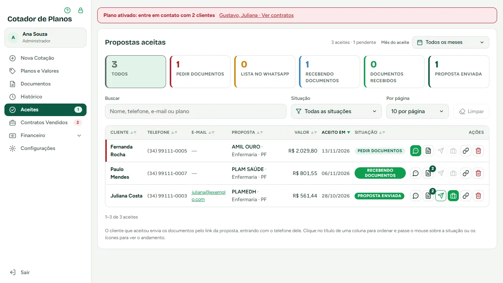
As etapas, na ordem
| Situação | O que aconteceu | O que fazer |
|---|---|---|
| Pedir documentos | O cliente aceitou a proposta. | Clique no ícone do WhatsApp: ele abre a conversa com a lista de documentos e o link de envio. |
| Lista no WhatsApp | Você mandou a lista. | Aguardar o cliente enviar. |
| Recebendo documentos | O cliente começou a enviar. | A contagem aparece no ícone de documentos; clique nele para ver e abrir os arquivos. |
| Documentos recebidos | O cliente clicou em Concluir envio e informou nome e e-mail. | Conferir os arquivos e enviar a proposta à operadora. |
| Proposta enviada | Você avisou o cliente pelo ícone do avião de papel. | Quando o plano for aprovado, cadastrar o contrato. |
- O avião de papel só libera depois que o cliente concluiu o envio. Ele abre a mensagem pronta para o WhatsApp, que pode ser editada antes de enviar.
- O ícone do contrato (maleta) só libera depois da proposta enviada. Ele pede a data de ativação e leva os documentos junto para Contratos Vendidos.
- O cliente entra na página de envio com o telefone dele, pode mandar os documentos aos poucos e continuar depois.
- O ícone de link copia de novo o link de envio, para reenviar ao cliente.
- A lixeira exclui o aceite e os documentos dele, e o link da proposta deixa de abrir para o cliente.
- Os cards e o Mês do aceite filtram a grade; a busca encontra nome, telefone, e-mail ou plano.
6. Contratos Vendidos
Cada venda fica aqui com a data de ativação. A partir dessa data, o sistema avisa que é hora de falar com o cliente, até você marcar o contato como feito.
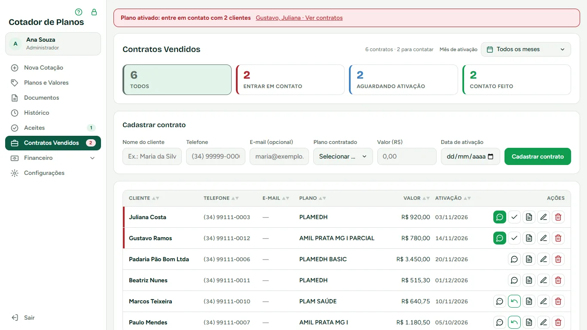
Cadastrar um contrato
- Preencha nome, telefone, e-mail (opcional), plano, valor da mensalidade e data de ativação.
- Clique em Cadastrar contrato. O contrato novo aparece no topo da lista, destacado em verde.
Contratos vindos de Aceites já chegam preenchidos e com os documentos. Os vindos do Histórico (situação Vendida ou a maleta da linha) chegam com o plano, o valor e a data de ativação escolhidos na janela da venda.
Acompanhar
- Mês de ativação (no topo) escolhe o mês dos cards e da grade.
- Cards: Todos, Entrar em contato, Aguardando ativação e Contato feito. Clicar num card filtra a grade.
- No dia da ativação aparece um aviso ao abrir o cotador e a faixa vermelha no topo da tela.
Ícones da linha
- Balão do WhatsApp: abre o texto pronto para o contato, editável antes de enviar. Fica verde enquanto o contato está pendente.
- Visto: marca o contato como feito; a seta curva desfaz.
- Documentos: guarda PDF, JPG, PNG ou WebP do cliente, sem limite de quantidade. Os arquivos abrem num visualizador na própria tela.
- Lápis edita e lixeira exclui. Excluir apaga também os documentos do contrato.
7. Financeiro
O Financeiro calcula a comissão de cada contrato pela regra da corretora. Primeiro cadastre as corretoras e as regras; depois, em Comissões, ligue cada contrato à sua regra.
Regras de pagamento
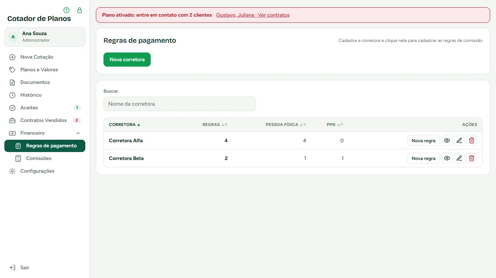
- Clique em Nova corretora e dê o nome dela.
- Clique na corretora para abrir as regras dela, ou em Nova regra na própria linha.
- Escolha o Segmento: Pessoa física ou PME.
- Em Operadoras, marque um ou mais planos. Selecionar todos marca os planos que aparecem na busca, e OK fecha a lista.
- Preencha os percentuais, todos sobre a mensalidade:
- Angariação (só Pessoa física): prevista para a data de ativação;
- 1ª a 4ª parcela: uma por mês, a 1ª no mês da ativação. Campo em branco vale zero.
- Clique em Adicionar regra: a mesma regra é criada para cada plano marcado.
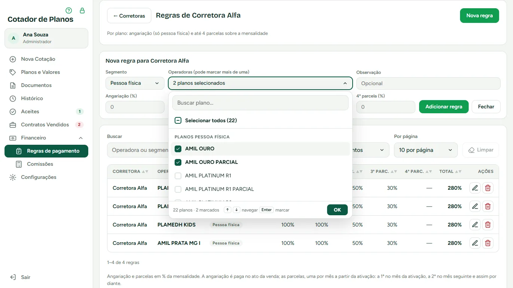
Na grade das regras, o lápis edita e a lixeira exclui. Excluir uma regra ou uma corretora deixa sem regra os contratos que a usavam.
Comissões
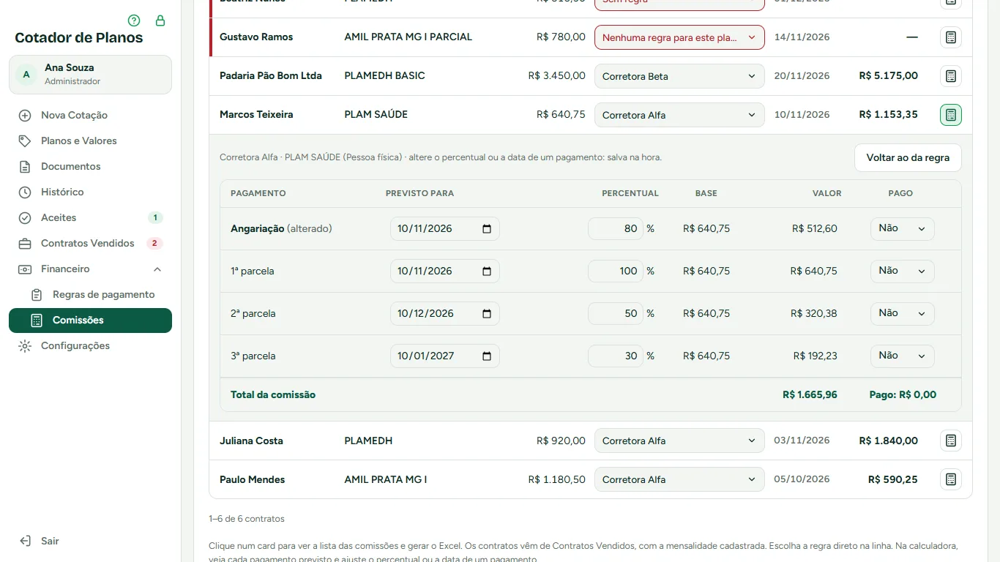
- Previsto para (no topo) escolhe o mês pela data prevista de cada pagamento. Vale para os cards, a grade e a lista.
- Regra na linha: na coluna Regra, escolha a corretora. A lista já traz só as corretoras com regra para o plano do contrato, e salva na hora.
- Contratos sem regra aparecem sempre, em primeiro e em vermelho, até a regra ser escolhida. Nenhuma regra para este plano quer dizer que nenhuma corretora tem regra para ele: cadastre em Regras de pagamento.
- Calculadora (ícone da linha): mostra cada pagamento com data, percentual, base e valor. Dá para mudar o percentual e a data prevista só deste contrato; Voltar ao da regra desfaz.
- Pago: marque Sim quando a comissão cair na conta. O valor sai de Comissão prevista e passa para Comissões recebidas.
| Pagamento | Previsto para | Conta | Valor |
|---|---|---|---|
| Angariação | 10/11/2026 | 100% de R$ 640,75 | R$ 640,75 |
| 1ª parcela | 10/11/2026 | 100% de R$ 640,75 | R$ 640,75 |
| 2ª parcela | 10/12/2026 | 50% de R$ 640,75 | R$ 320,38 |
| 3ª parcela | 10/01/2027 | 30% de R$ 640,75 | R$ 192,23 |
| Total da comissão | R$ 1.794,11 | ||
Cards e lista das comissões
| Card | O que soma |
|---|---|
| Comissão prevista | pagamentos previstos no mês e ainda com Pago = Não |
| Comissões recebidas | pagamentos previstos no mês e marcados Sim |
| Contratos sem regra | contratos que ainda não têm regra |
Clicar em Comissão prevista ou em Comissões recebidas abre a lista dos pagamentos do mês, com o botão Gerar Excel.
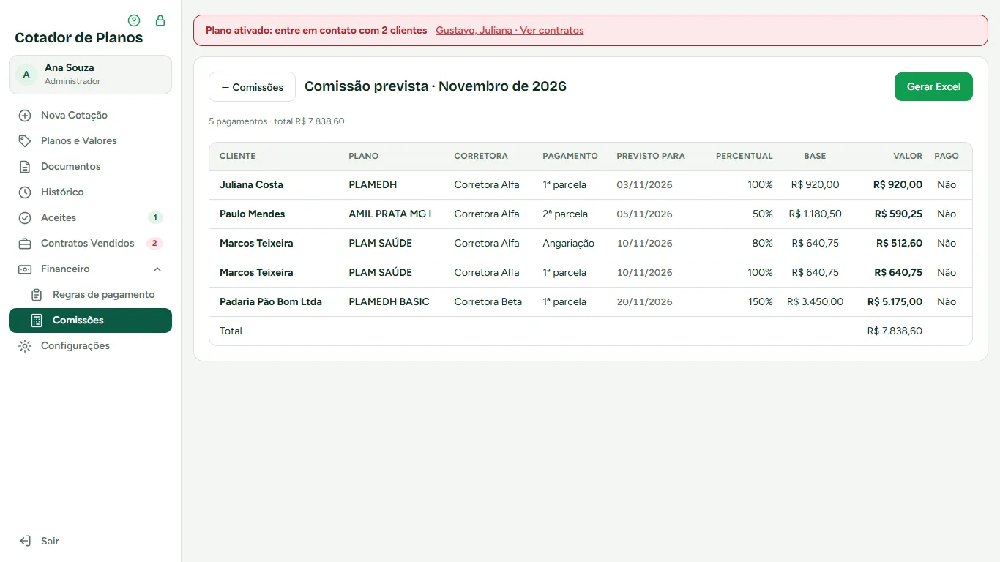
8. Configurações
Cada login cuida dos próprios dados e da senha; o administrador também cuida dos usuários, das mensalidades, do backup e das atualizações.
- Meus dados: nome, telefone, empresa, e-mail e foto. Nome, telefone e empresa vão na proposta enviada ao cliente, e o e-mail serve para recuperar a senha.
- Alterar senha: informe a senha atual e a nova, com no mínimo 8 caracteres.
Só o administrador
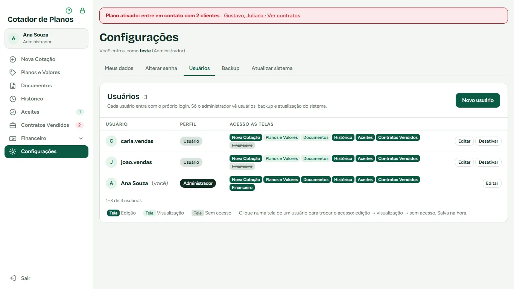
- Usuários:
- Novo usuário cria um login com e-mail, senha inicial e perfil;
- clicar numa tela de um usuário troca o acesso (edição → visualização → sem acesso) e salva na hora;
- Desativar bloqueia o login, mas guarda as cotações, os contratos e os documentos dele; Ativar libera de novo.
- Mensalidades: a cobrança mensal de uso do sistema de cada corretor (o administrador não paga).
- os cards no topo mostram o previsto por mês, o recebido e o que falta receber no mês e o total em atraso. Clicar num deles filtra a lista pelos corretores daquela conta, e clicar de novo tira o filtro. Os cards de situação (inclusive Bloqueado, quando há alguém bloqueado) também filtram, e a busca acha o corretor pelo nome, login, e-mail ou telefone;
- a coluna Última cobrança mostra o mês mais recente do corretor e se ele está pago, em aberto ou atrasado;
- o ícone da calculadora programa a cobrança: valor, dia do vencimento (de 1 a 28) e o primeiro mês cobrado. Antes de salvar, a janela mostra a prévia, como "Serão cobrados R$ 99,90 todo dia 10, a partir de 10/12/2026", e os próximos vencimentos. Desmarcar Cobrança ativa pausa a cobrança;
- os meses aparecem sozinhos todo mês. O ícone do olho abre uma janela com os meses do corretor: Marcar como pago pede a data e a forma de pagamento, Dispensar deixa de cobrar aquele mês e Desfazer pagamento volta atrás. Na mesma janela, abaixo dos meses, fica o Registro de alterações: quem programou ou mudou a cobrança, marcou ou desfez um pagamento, dispensou um mês, e quando. O bloqueio e a liberação automáticos aparecem como feitos pelo Sistema;
- o ícone do WhatsApp abre a conversa com o corretor e a mensagem de cobrança pronta, com os meses atrasados e os que vencem nos próximos 7 dias;
- Régua de cobrança (a barra mostra o resumo; clique nela para abrir a janela com os campos): lembretes automáticos para cada mês em aberto, de segunda a sexta, das 9h às 18h.
- Lembrete antes do vencimento (padrão: 5 dias antes), Avisar no dia e Aviso de atraso (padrão: 3 dias depois). 0 desliga a etapa;
- Enviar por: WhatsApp (sai pelo número de quem salvou a régua, conectado na tela Resgate) e e-mail (vai para o e-mail do cadastro do corretor). Sem nenhum canal marcado, nada é enviado;
- Como pagar: texto que vai no fim de cada lembrete, como a chave Pix;
- cada lembrete sai uma vez só e aparece no registro de alterações do corretor. O aviso de atraso diz até quando pagar para não ser bloqueado;
- Bloquear o login com atraso de: quem passa desse atraso tem o login desativado, e ele volta sozinho quando o atraso é pago ou a cobrança é pausada. 0 desliga o bloqueio. Quem você desativou à mão em Usuários continua desativado e não recebe lembretes.
- Backup: Fazer backup baixa um arquivo com planos, usuários, histórico, contratos com documentos e imagens. Restaurar backup troca todos os dados pelos do arquivo; uma cópia dos dados atuais fica na pasta backups.
- Atualizar sistema: baixa a versão mais recente e reinicia o cotador. Os dados não mudam; os links dos clientes ficam fora do ar por alguns instantes.
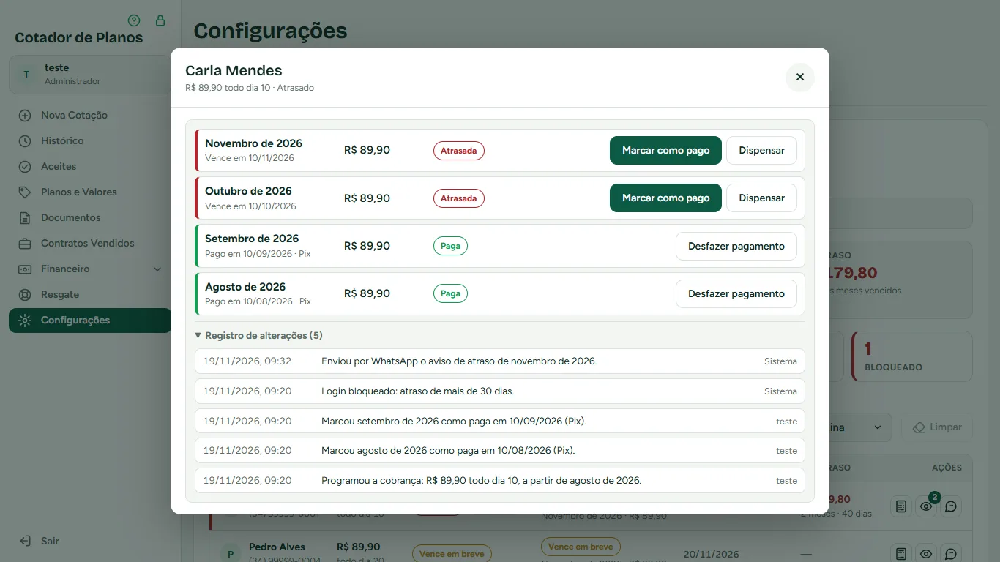
9. Dúvidas frequentes
Fui desconectado sozinho. O mesmo login entrou em outro aparelho. Cada login é individual; peça ao administrador um login seu.
Não consigo mexer nas faixas etárias. Preencha antes o nome e o WhatsApp do cliente, com DDD.
Um plano não aparece na cotação. Confira a cidade, o tipo (Pessoa física ou CNPJ), a administradora e a entidade escolhidos, e a área de comercialização do plano em Planos e Valores.
O cliente aceitou, mas não aparece em Aceites. Ele precisa abrir o link da proposta e clicar em Confirmar aceite. Só abrir o link, ou ver a prévia no WhatsApp, não conta como aceite.
O botão Proposta enviada está apagado. O cliente ainda não concluiu o envio dos documentos.
O contrato aparece como "Nenhuma regra para este plano". Nenhuma corretora tem regra para o plano dele: cadastre em Regras de pagamento.
A comissão do mês está diferente do esperado. Confira o mês em Previsto para, o valor da mensalidade do contrato e, na calculadora, se algum pagamento foi alterado (aparece como alterado).
Uma tela não aparece no menu. O seu usuário está sem acesso a ela; o administrador libera em Configurações > Usuários.
Uma mudança nova não apareceu. O administrador roda Atualizar sistema; depois, recarregue a página com Ctrl+Shift+R.